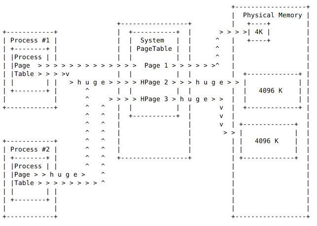

hugeadm HugePage介绍 Linux内存管理采用“分页机制”，内存页面默认大小为4KB。但是当运行内存需求量较大时，默认4KB大小的页面会导致较多的TLB miss和缺页中断，从而大大影响应用程序性能。
但是直接修改Linux内核页面大小，涉及面较广，不一定合适。为了以最小代价实现大页面支持，Linux采用了hugetlbfs特殊文件系统。这种文件系统形式支持大页面，使得应用程序可以根据需要灵活地选择虚拟内存页面大小，而不会被强制使用2MB大小页面。
使用HugePage需要内核中打开CONFIG_HUGETLB_PAGE以及CONFIG_HUGETLBFS。
Page Table:页表，也就是一种用于内存管理的实现方式，用于物理地址到逻辑地址之间的映射。因此对于内存的访问，先是访问Page Table，然后根据Page Table中的映射关系，隐式的转移到物理地址来存取数据。
TLB: Translation Lookaside Buffer (TLB) ，是虚拟地址到物理地址转换cache，包含了部分page table的映射关系，用于快速实现虚拟地址到物理地址的转换。
hugetlb: hugetlb 是TLB中指向HugePage的一个入口。
用户可以通过mmap或者SYSV共享内存(shmget/shmat)来使用HugePage。
内核中预留给HugePage的内存不能被其他功能复用。并且是不保证物理连续的。

HugePage实现 HugePage的应用涉及到两方面：内核使用HugeTLB对HugePage进行应设管理；使用hugetlbfs来提供为文件系统给用户空间访问。
2.1 HugeTLB初始化 2.1.1 数据结构 全局数组hstates中每一个struct hstate相当于一个Huge Page池，不同的成员，其页面大小是不一样的。
hugetlb_max_hstate表示当前成员数量，HUGE_MAX_HSTATE表示系统支持最多struct hstate数量。
1 2 3 4 5 6 7 8 9 10 11 12 13 14 15 16 17 18 19 20 21 22 23 24 25 struct hstate hstates[HUGE_MAX_HSTATE]; /* Defines one hugetlb page size */ struct hstate { int next_nid_to_alloc; int next_nid_to_free; unsigned int order; unsigned long mask; unsigned long max_huge_pages; unsigned long nr_huge_pages; unsigned long free_huge_pages; unsigned long resv_huge_pages; unsigned long surplus_huge_pages; unsigned long nr_overcommit_huge_pages; struct list_head hugepage_activelist; struct list_head hugepage_freelists[MAX_NUMNODES]; unsigned int nr_huge_pages_node[MAX_NUMNODES]; unsigned int free_huge_pages_node[MAX_NUMNODES]; unsigned int surplus_huge_pages_node[MAX_NUMNODES]; #ifdef CONFIG_CGROUP_HUGETLB /* cgroup control files */ struct cftype cgroup_files[5]; #endif char name[HSTATE_NAME_LEN]; };
2.1.2 Huge Page TLB初始化 hugetlb_init ()是Huge Page初始化入口，属于subsys_initcall()，在arch_initcall()之后，fs_initcall()之前。
1 2 3 4 5 6 7 8 9 10 11 12 13 14 15 16 17 18 19 20 21 22 23 24 25 26 27 28 29 30 31 32 33 34 35 36 37 38 39 40 41 42 43 44 45 46 47 48 49 50 51 52 53 54 55 56 57 58 59 60 61 62 63 64 65 66 67 68 69 70 71 static int __init hugetlb_init(void) { int i; if (!hugepages_supported()) return 0; if (!size_to_hstate(default_hstate_size)) {-------------------------------如果通过command line设置了default_hugepagesz则跳过；否则使用系统默认的HPAGE_SIZE作为默认Huge Page大小。 if (default_hstate_size != 0) { pr_err("HugeTLB: unsupported default_hugepagesz %lu. Reverting to %lu\n", default_hstate_size, HPAGE_SIZE); } default_hstate_size = HPAGE_SIZE; if (!size_to_hstate(default_hstate_size)) hugetlb_add_hstate(HUGETLB_PAGE_ORDER); } default_hstate_idx = hstate_index(size_to_hstate(default_hstate_size));---默认Huge Page在hstates中对应索引号。 if (default_hstate_max_huge_pages) { if (!default_hstate.max_huge_pages) default_hstate.max_huge_pages = default_hstate_max_huge_pages; } hugetlb_init_hstates();---------------------------------------------------根据当前hstate->order，初始化order小于MAX_ORDER的Huge Page内存池。较大的部分在之前已经进行分配。 gather_bootmem_prealloc(); report_hugepages();-------------------------------------------------------输出当前系统支持的不同Huge Page大小以及分配页数。 hugetlb_sysfs_init();-----------------------------------------------------在/sys/kernel/mm/hugepages目录下针对不同大小的Huge Paeg创建目录。 hugetlb_register_all_nodes();---------------------------------------------处理NUMA架构下不同node的Huge Page。 hugetlb_cgroup_file_init();-----------------------------------------------创建/sys/fs/cgroup/hugetlb下节点：hugetlb.2MB.failcnt、hugetlb.2MB.limit_in_bytes、hugetlb.2MB.max_usage_in_bytes、hugetlb.2MB.usage_in_bytes。 #ifdef CONFIG_SMP num_fault_mutexes = roundup_pow_of_two(8 * num_possible_cpus()); #else num_fault_mutexes = 1; #endif hugetlb_fault_mutex_table = kmalloc(sizeof(struct mutex) * num_fault_mutexes, GFP_KERNEL); BUG_ON(!hugetlb_fault_mutex_table); for (i = 0; i < num_fault_mutexes; i++) mutex_init(&hugetlb_fault_mutex_table[i]);----------------------------创建hugetlb mutex。 return 0; } void __init hugetlb_add_hstate(unsigned int order) { struct hstate *h; unsigned long i; if (size_to_hstate(PAGE_SIZE << order)) {------------------避免同大小两次加入。 pr_warn("hugepagesz= specified twice, ignoring\n"); return; } BUG_ON(hugetlb_max_hstate >= HUGE_MAX_HSTATE); BUG_ON(order == 0); h = &hstates[hugetlb_max_hstate++];------------------------设置hstates中对应Huge Page池属性。 h->order = order; h->mask = ~((1ULL << (order + PAGE_SHIFT)) - 1); h->nr_huge_pages = 0; h->free_huge_pages = 0; for (i = 0; i < MAX_NUMNODES; ++i) INIT_LIST_HEAD(&h->hugepage_freelists[i]); INIT_LIST_HEAD(&h->hugepage_activelist); h->next_nid_to_alloc = first_memory_node; h->next_nid_to_free = first_memory_node; snprintf(h->name, HSTATE_NAME_LEN, "hugepages-%lukB", huge_page_size(h)/1024); parsed_hstate = h; }
hugetlb_sysfs_init ()对不同大小的Huge Page创建/sys/kernel/mm/hugepages对应的目录，对每个目录中属性节点进行配置达到配置Huge Page池的目的。
1 2 3 4 5 6 7 8 9 10 11 12 13 14 15 16 17 18 19 20 21 22 23 24 25 26 27 28 29 30 31 32 33 34 35 36 37 38 39 40 41 42 43 44 45 46 47 48 49 50 static void __init hugetlb_sysfs_init(void) { struct hstate *h; int err; hugepages_kobj = kobject_create_and_add("hugepages", mm_kobj); if (!hugepages_kobj) return; for_each_hstate(h) { err = hugetlb_sysfs_add_hstate(h, hugepages_kobj, hstate_kobjs, &hstate_attr_group); if (err) pr_err("Hugetlb: Unable to add hstate %s", h->name); } } static int hugetlb_sysfs_add_hstate(struct hstate *h, struct kobject *parent, struct kobject **hstate_kobjs, const struct attribute_group *hstate_attr_group) { int retval; int hi = hstate_index(h); hstate_kobjs[hi] = kobject_create_and_add(h->name, parent); if (!hstate_kobjs[hi]) return -ENOMEM; retval = sysfs_create_group(hstate_kobjs[hi], hstate_attr_group); if (retval) kobject_put(hstate_kobjs[hi]); return retval; } static const struct attribute_group hstate_attr_group = { .attrs = hstate_attrs, }; static struct attribute *hstate_attrs[] = { &nr_hugepages_attr.attr, &nr_overcommit_hugepages_attr.attr, &free_hugepages_attr.attr, &resv_hugepages_attr.attr, &surplus_hugepages_attr.attr, #ifdef CONFIG_NUMA &nr_hugepages_mempolicy_attr.attr, #endif NULL, };
修改nr_hugepaegs对Huge Page页面数进行配置，核心是set_max_huge_pages ()。
1 2 3 4 5 6 7 8 9 10 11 12 13 14 15 16 17 18 19 20 21 22 23 24 25 26 27 28 29 30 31 32 33 34 35 36 37 38 39 40 41 42 43 44 45 46 47 48 49 50 51 52 53 54 55 56 57 58 59 60 61 62 63 64 65 66 67 68 69 70 71 72 73 74 75 76 77 78 79 80 81 82 83 84 85 86 87 88 89 90 91 92 93 94 95 96 97 98 99 100 101 102 103 104 105 106 107 108 109 110 111 112 113 114 115 116 117 118 119 120 121 122 123 124 125 126 127 128 129 130 131 132 133 134 135 136 137 138 139 140 141 142 143 144 145 146 147 148 149 150 151 152 153 154 155 156 157 158 159 160 161 162 163 164 165 166 167 168 169 170 static ssize_t nr_hugepages_show_common(struct kobject *kobj, struct kobj_attribute *attr, char *buf) { struct hstate *h; unsigned long nr_huge_pages; int nid; h = kobj_to_hstate(kobj, &nid); if (nid == NUMA_NO_NODE) nr_huge_pages = h->nr_huge_pages; else nr_huge_pages = h->nr_huge_pages_node[nid]; return sprintf(buf, "%lu\n", nr_huge_pages); } static ssize_t __nr_hugepages_store_common(bool obey_mempolicy, struct hstate *h, int nid, unsigned long count, size_t len) { int err; NODEMASK_ALLOC(nodemask_t, nodes_allowed, GFP_KERNEL | __GFP_NORETRY); if (hstate_is_gigantic(h) && !gigantic_page_supported()) { err = -EINVAL; goto out; } if (nid == NUMA_NO_NODE) { /* * global hstate attribute */ if (!(obey_mempolicy && init_nodemask_of_mempolicy(nodes_allowed))) { NODEMASK_FREE(nodes_allowed); nodes_allowed = &node_states[N_MEMORY]; } } else if (nodes_allowed) { /* * per node hstate attribute: adjust count to global, * but restrict alloc/free to the specified node. */ count += h->nr_huge_pages - h->nr_huge_pages_node[nid]; init_nodemask_of_node(nodes_allowed, nid); } else nodes_allowed = &node_states[N_MEMORY]; h->max_huge_pages = set_max_huge_pages(h, count, nodes_allowed); if (nodes_allowed != &node_states[N_MEMORY]) NODEMASK_FREE(nodes_allowed); return len; out: NODEMASK_FREE(nodes_allowed); return err; } static ssize_t nr_hugepages_store_common(bool obey_mempolicy, struct kobject *kobj, const char *buf, size_t len) { struct hstate *h; unsigned long count; int nid; int err; err = kstrtoul(buf, 10, &count); if (err) return err; h = kobj_to_hstate(kobj, &nid); return __nr_hugepages_store_common(obey_mempolicy, h, nid, count, len); } static ssize_t nr_hugepages_show(struct kobject *kobj, struct kobj_attribute *attr, char *buf) { return nr_hugepages_show_common(kobj, attr, buf); } static ssize_t nr_hugepages_store(struct kobject *kobj, struct kobj_attribute *attr, const char *buf, size_t len) { return nr_hugepages_store_common(false, kobj, buf, len); } HSTATE_ATTR(nr_hugepages); #define persistent_huge_pages(h) (h->nr_huge_pages - h->surplus_huge_pages) static unsigned long set_max_huge_pages(struct hstate *h, unsigned long count, nodemask_t *nodes_allowed) { unsigned long min_count, ret; if (hstate_is_gigantic(h) && !gigantic_page_supported()) return h->max_huge_pages; /* * Increase the pool size * First take pages out of surplus state. Then make up the * remaining difference by allocating fresh huge pages. * * We might race with __alloc_buddy_huge_page() here and be unable * to convert a surplus huge page to a normal huge page. That is * not critical, though, it just means the overall size of the * pool might be one hugepage larger than it needs to be, but * within all the constraints specified by the sysctls. */ spin_lock(&hugetlb_lock); while (h->surplus_huge_pages && count > persistent_huge_pages(h)) { if (!adjust_pool_surplus(h, nodes_allowed, -1)) break; } while (count > persistent_huge_pages(h)) { /* * If this allocation races such that we no longer need the * page, free_huge_page will handle it by freeing the page * and reducing the surplus. */ spin_unlock(&hugetlb_lock); /* yield cpu to avoid soft lockup */ cond_resched(); if (hstate_is_gigantic(h)) ret = alloc_fresh_gigantic_page(h, nodes_allowed); else ret = alloc_fresh_huge_page(h, nodes_allowed); spin_lock(&hugetlb_lock); if (!ret) goto out; /* Bail for signals. Probably ctrl-c from user */ if (signal_pending(current)) goto out; } /* * Decrease the pool size * First return free pages to the buddy allocator (being careful * to keep enough around to satisfy reservations). Then place * pages into surplus state as needed so the pool will shrink * to the desired size as pages become free. * * By placing pages into the surplus state independent of the * overcommit value, we are allowing the surplus pool size to * exceed overcommit. There are few sane options here. Since * __alloc_buddy_huge_page() is checking the global counter, * though, we'll note that we're not allowed to exceed surplus * and won't grow the pool anywhere else. Not until one of the * sysctls are changed, or the surplus pages go out of use. */ min_count = h->resv_huge_pages + h->nr_huge_pages - h->free_huge_pages; min_count = max(count, min_count); try_to_free_low(h, min_count, nodes_allowed); while (min_count < persistent_huge_pages(h)) { if (!free_pool_huge_page(h, nodes_allowed, 0)) break; cond_resched_lock(&hugetlb_lock); } while (count < persistent_huge_pages(h)) { if (!adjust_pool_surplus(h, nodes_allowed, 1)) break; } out: ret = persistent_huge_pages(h); spin_unlock(&hugetlb_lock); return ret; }
其他属性包括：nr_overcommit_hugepages配置Huge Page池超额使用页面数；free_hugepages、resv_hugepages、surplus_hugepages等属性都是只读。
对于非NUMA架构，nr_overcommit_hugepages、free_hugepages、resv_hugepages、surplus_hugepages分别对应struct hstate中的nr_overcommit_huge_pages、free_huge_pages、resv_huge_pages、surplus_huge_pages。
2.2 hugetlbfs hugetlbfs中创建的文件可以被读系统调用操作，但是不允许被写系统调用操作。如果需要些内容，可以修改mmap之后的内存。
chown/chgrp/chmod等修改问文件属性的命令仍然可以被使用。
1 2 3 4 5 6 7 8 9 10 11 12 13 14 15 16 17 18 19 20 21 22 23 24 25 26 27 28 29 30 31 32 33 34 35 36 37 38 39 40 41 42 43 44 45 46 47 48 49 50 fs_initcall(init_hugetlbfs_fs) static int __init init_hugetlbfs_fs(void) { struct hstate *h; int error; int i; if (!hugepages_supported()) { pr_info("disabling because there are no supported hugepage sizes\n"); return -ENOTSUPP; } error = -ENOMEM; hugetlbfs_inode_cachep = kmem_cache_create("hugetlbfs_inode_cache", sizeof(struct hugetlbfs_inode_info), 0, SLAB_ACCOUNT, init_once);-------------------------初始化hugetlbfs文件系统inode slab缓存。 if (hugetlbfs_inode_cachep == NULL) goto out2; error = register_filesystem(&hugetlbfs_fs_type);---------------------注册hugetlbfs文件系统。 if (error) goto out; i = 0; for_each_hstate(h) { char buf[50]; unsigned ps_kb = 1U << (h->order + PAGE_SHIFT - 10); snprintf(buf, sizeof(buf), "pagesize=%uK", ps_kb); hugetlbfs_vfsmount[i] = kern_mount_data(&hugetlbfs_fs_type, buf); if (IS_ERR(hugetlbfs_vfsmount[i])) { pr_err("Cannot mount internal hugetlbfs for " "page size %uK", ps_kb); error = PTR_ERR(hugetlbfs_vfsmount[i]); hugetlbfs_vfsmount[i] = NULL; } i++; } /* Non default hstates are optional */ if (!IS_ERR_OR_NULL(hugetlbfs_vfsmount[default_hstate_idx])) return 0; out: kmem_cache_destroy(hugetlbfs_inode_cachep); out2: return error; }
hugetlbfs文件系统目录、文件、块等操作函数集如下：
1 2 3 4 5 6 7 8 9 10 11 12 13 14 15 16 17 18 19 20 21 22 23 24 25 26 27 28 29 30 31 32 33 34 35 36 37 38 39 40 41 42 43 44 45 46 47 48 49 50 51 52 53 54 55 56 57 58 59 60 61 62 63 64 65 66 67 68 69 70 71 72 73 74 75 76 77 78 79 80 81 82 83 84 85 86 87 88 89 90 91 92 93 94 95 96 97 98 99 100 101 102 103 104 105 static struct file_system_type hugetlbfs_fs_type = { .name = "hugetlbfs", .mount = hugetlbfs_mount, .kill_sb = kill_litter_super, }; static struct dentry *hugetlbfs_mount(struct file_system_type *fs_type, int flags, const char *dev_name, void *data) { return mount_nodev(fs_type, flags, data, hugetlbfs_fill_super); } static int hugetlbfs_fill_super(struct super_block *sb, void *data, int silent) { int ret; struct hugetlbfs_config config; struct hugetlbfs_sb_info *sbinfo; config.max_hpages = -1; /* No limit on size by default */ config.nr_inodes = -1; /* No limit on number of inodes by default */ config.uid = current_fsuid(); config.gid = current_fsgid(); config.mode = 0755; config.hstate = &default_hstate; config.min_hpages = -1; /* No default minimum size */ ret = hugetlbfs_parse_options(data, &config); if (ret) return ret; sbinfo = kmalloc(sizeof(struct hugetlbfs_sb_info), GFP_KERNEL); if (!sbinfo) return -ENOMEM; sb->s_fs_info = sbinfo; sbinfo->hstate = config.hstate; spin_lock_init(&sbinfo->stat_lock); sbinfo->max_inodes = config.nr_inodes; sbinfo->free_inodes = config.nr_inodes; sbinfo->spool = NULL; sbinfo->uid = config.uid; sbinfo->gid = config.gid; sbinfo->mode = config.mode; /* * Allocate and initialize subpool if maximum or minimum size is * specified. Any needed reservations (for minimim size) are taken * taken when the subpool is created. */ if (config.max_hpages != -1 || config.min_hpages != -1) { sbinfo->spool = hugepage_new_subpool(config.hstate, config.max_hpages, config.min_hpages); if (!sbinfo->spool) goto out_free; } sb->s_maxbytes = MAX_LFS_FILESIZE; sb->s_blocksize = huge_page_size(config.hstate); sb->s_blocksize_bits = huge_page_shift(config.hstate); sb->s_magic = HUGETLBFS_MAGIC; sb->s_op = &hugetlbfs_ops; sb->s_time_gran = 1; sb->s_root = d_make_root(hugetlbfs_get_root(sb, &config)); if (!sb->s_root) goto out_free; return 0; out_free: kfree(sbinfo->spool); kfree(sbinfo); return -ENOMEM; } static const struct super_operations hugetlbfs_ops = { .alloc_inode = hugetlbfs_alloc_inode, .destroy_inode = hugetlbfs_destroy_inode, .evict_inode = hugetlbfs_evict_inode, .statfs = hugetlbfs_statfs, .put_super = hugetlbfs_put_super, .show_options = hugetlbfs_show_options, }; static const struct inode_operations hugetlbfs_dir_inode_operations = { .create = hugetlbfs_create, .lookup = simple_lookup, .link = simple_link, .unlink = simple_unlink, .symlink = hugetlbfs_symlink, .mkdir = hugetlbfs_mkdir, .rmdir = simple_rmdir, .mknod = hugetlbfs_mknod, .rename = simple_rename, .setattr = hugetlbfs_setattr, }; static const struct inode_operations hugetlbfs_inode_operations = { .setattr = hugetlbfs_setattr, }; const struct file_operations hugetlbfs_file_operations = {--------------可以看出hugetlbfs文件系统中文件只支持read/mmap/ummap等操作，不支持write。 .read_iter = hugetlbfs_read_iter, .mmap = hugetlbfs_file_mmap, .fsync = noop_fsync, .get_unmapped_area = hugetlb_get_unmapped_area, .llseek = default_llseek, .fallocate = hugetlbfs_fallocate, };
2.3 mmap和shmget/shmat 用户空间在hugetlbfs文件系统创建文件，或者使用MAP_HUGETLB属性时，在mmap系统调用中执行如下操作：
1 2 3 4 5 6 7 8 9 10 11 12 13 14 15 16 17 18 19 20 21 22 23 24 25 26 27 28 29 30 31 32 33 34 35 36 37 38 39 40 41 42 43 44 45 46 47 48 SYSCALL_DEFINE6(mmap_pgoff, unsigned long, addr, unsigned long, len, unsigned long, prot, unsigned long, flags, unsigned long, fd, unsigned long, pgoff) { struct file *file = NULL; unsigned long retval; if (!(flags & MAP_ANONYMOUS)) {-----------------------------------有名文件映射。 audit_mmap_fd(fd, flags); file = fget(fd); if (!file) return -EBADF; if (is_file_hugepages(file))----------------------------------如果是hugetlbfs文件系统文件，将文件大小对齐到页面大小。 len = ALIGN(len, huge_page_size(hstate_file(file))); retval = -EINVAL; if (unlikely(flags & MAP_HUGETLB && !is_file_hugepages(file))) goto out_fput; } else if (flags & MAP_HUGETLB) {--------------------------------匿名Huge Page映射。 struct user_struct *user = NULL; struct hstate *hs; hs = hstate_sizelog((flags >> MAP_HUGE_SHIFT) & MAP_HUGE_MASK); if (!hs) return -EINVAL; len = ALIGN(len, huge_page_size(hs));------------------------大小对齐到Huge Page大小。 /* * VM_NORESERVE is used because the reservations will be * taken when vm_ops->mmap() is called * A dummy user value is used because we are not locking * memory so no accounting is necessary */ file = hugetlb_file_setup(HUGETLB_ANON_FILE, len, VM_NORESERVE, &user, HUGETLB_ANONHUGE_INODE, (flags >> MAP_HUGE_SHIFT) & MAP_HUGE_MASK);----------创建文件，使用hugetlbfs_file_operations作为操作函数集。 if (IS_ERR(file)) return PTR_ERR(file); } flags &= ~(MAP_EXECUTABLE | MAP_DENYWRITE); retval = vm_mmap_pgoff(file, addr, len, prot, flags, pgoff);----调用hugetlbfs的mmap函数hugetlbfs_file_mmap()进行映射。 out_fput: if (file) fput(file); return retval; }
当使用SysV共享内存进行Huge Page映射时：
1 2 3 4 5 6 7 8 9 10 11 12 13 14 15 16 17 18 19 20 21 22 23 24 25 26 27 28 29 30 31 32 33 34 35 36 37 static int newseg(struct ipc_namespace *ns, struct ipc_params *params) { key_t key = params->key; int shmflg = params->flg; size_t size = params->u.size; int error; struct shmid_kernel *shp; size_t numpages = (size + PAGE_SIZE - 1) >> PAGE_SHIFT; struct file *file; char name[13]; vm_flags_t acctflag = 0; ... sprintf(name, "SYSV%08x", key); if (shmflg & SHM_HUGETLB) { struct hstate *hs; size_t hugesize; hs = hstate_sizelog((shmflg >> SHM_HUGE_SHIFT) & SHM_HUGE_MASK);--------Huge Page页面大小对齐。 if (!hs) { error = -EINVAL; goto no_file; } hugesize = ALIGN(size, huge_page_size(hs)); /* hugetlb_file_setup applies strict accounting */ if (shmflg & SHM_NORESERVE) acctflag = VM_NORESERVE; file = hugetlb_file_setup(name, hugesize, acctflag, &shp->mlock_user, HUGETLB_SHMFS_INODE, (shmflg >> SHM_HUGE_SHIFT) & SHM_HUGE_MASK);---------------------创建hugetlbfs文件。 } else { ... } error = PTR_ERR(file); if (IS_ERR(file)) goto no_file;... }
内存映射在do_shmat()中进行：
1 2 3 4 5 6 7 8 9 10 11 12 13 14 15 16 17 18 19 20 21 22 23 static const struct file_operations shm_file_operations_huge = { .mmap = shm_mmap, .fsync = shm_fsync, .release = shm_release, .get_unmapped_area = shm_get_unmapped_area, .llseek = noop_llseek, .fallocate = shm_fallocate, }; long do_shmat(int shmid, char __user *shmaddr, int shmflg, ulong *raddr, unsigned long shmlba) { struct shmid_kernel *shp; unsigned long addr = (unsigned long)shmaddr; ... file = alloc_file(&path, f_mode, is_file_hugepages(shp->shm_file) ? &shm_file_operations_huge : &shm_file_operations); ... addr = do_mmap_pgoff(file, addr, size, prot, flags, 0, &populate, NULL);----调用shm_mmap()进行映射。 ... }
2.4 HugePage缺页异常 do_page_fault()是系统处理缺页异常的入口，如果是Huge Page类型的缺页异常则调用hugetlb_fault ()进行处理。
1 2 3 4 5 6 7 8 9 10 11 12 13 14 15 16 17 18 19 20 21 22 23 24 25 26 27 28 29 30 31 32 33 34 35 36 37 38 39 40 41 42 43 44 45 46 47 48 49 50 51 52 53 54 55 56 57 58 59 60 61 62 63 64 65 66 67 68 69 70 71 72 73 74 75 76 77 78 79 80 81 82 83 84 85 86 87 88 89 90 91 92 93 94 95 96 97 98 99 100 101 102 103 104 105 106 107 108 109 110 111 112 113 114 115 116 117 118 119 120 121 do_page_fault ->__do_page_fault ->handle_mm_fault int handle_mm_fault(struct vm_area_struct *vma, unsigned long address, unsigned int flags) { ... if (unlikely(is_vm_hugetlb_page(vma))) ret = hugetlb_fault(vma->vm_mm, vma, address, flags); else ret = __handle_mm_fault(vma, address, flags); ... } int hugetlb_fault(struct mm_struct *mm, struct vm_area_struct *vma, unsigned long address, unsigned int flags) { pte_t *ptep, entry; spinlock_t *ptl; int ret; u32 hash; pgoff_t idx; struct page *page = NULL; struct page *pagecache_page = NULL; struct hstate *h = hstate_vma(vma); struct address_space *mapping; int need_wait_lock = 0; address &= huge_page_mask(h); ptep = huge_pte_offset(mm, address, huge_page_size(h)); if (ptep) { entry = huge_ptep_get(ptep); if (unlikely(is_hugetlb_entry_migration(entry))) { migration_entry_wait_huge(vma, mm, ptep); return 0; } else if (unlikely(is_hugetlb_entry_hwpoisoned(entry))) return VM_FAULT_HWPOISON_LARGE | VM_FAULT_SET_HINDEX(hstate_index(h)); } else { ptep = huge_pte_alloc(mm, address, huge_page_size(h)); if (!ptep) return VM_FAULT_OOM; } mapping = vma->vm_file->f_mapping; idx = vma_hugecache_offset(h, vma, address); hash = hugetlb_fault_mutex_hash(h, mm, vma, mapping, idx, address); mutex_lock(&hugetlb_fault_mutex_table[hash]); entry = huge_ptep_get(ptep); if (huge_pte_none(entry)) { ret = hugetlb_no_page(mm, vma, mapping, idx, address, ptep, flags); goto out_mutex; } ret = 0; if (!pte_present(entry)) goto out_mutex; if ((flags & FAULT_FLAG_WRITE) && !huge_pte_write(entry)) { if (vma_needs_reservation(h, vma, address) < 0) { ret = VM_FAULT_OOM; goto out_mutex; } /* Just decrements count, does not deallocate */ vma_end_reservation(h, vma, address); if (!(vma->vm_flags & VM_MAYSHARE)) pagecache_page = hugetlbfs_pagecache_page(h, vma, address); } ptl = huge_pte_lock(h, mm, ptep); /* Check for a racing update before calling hugetlb_cow */ if (unlikely(!pte_same(entry, huge_ptep_get(ptep)))) goto out_ptl; page = pte_page(entry); if (page != pagecache_page) if (!trylock_page(page)) { need_wait_lock = 1; goto out_ptl; } get_page(page); if (flags & FAULT_FLAG_WRITE) { if (!huge_pte_write(entry)) { ret = hugetlb_cow(mm, vma, address, ptep, pagecache_page, ptl); goto out_put_page; } entry = huge_pte_mkdirty(entry); } entry = pte_mkyoung(entry); if (huge_ptep_set_access_flags(vma, address, ptep, entry, flags & FAULT_FLAG_WRITE)) update_mmu_cache(vma, address, ptep); out_put_page: if (page != pagecache_page) unlock_page(page); put_page(page); out_ptl: spin_unlock(ptl); if (pagecache_page) { unlock_page(pagecache_page); put_page(pagecache_page); } out_mutex: mutex_unlock(&hugetlb_fault_mutex_table[hash]); if (need_wait_lock) wait_on_page_locked(page); return ret; }
3. HugePage配置 获取当前系统使用页面大小命令：
通过/proc/meminfo查看HugePage信息：
1 2 3 4 5 6 7 8 9 10 MemTotal: 16310112 kB MemFree: 586168 kB MemAvailable: 10733508 kB ... HugePages_Total: 0---------------------HugePage池中大小。 HugePages_Free: 0---------------------HugePage池中未被分配HugePage数量。 HugePages_Rsvd: 0---------------------HugePage池中承诺被分配但还未执行分配操作的HugePage数量。 HugePages_Surp: 0---------------------HugePage池中超出/proc/sys/vm/nr_hugepages。最大不超过/proc/sys/vm/nr_overcommit_hugepages。 Hugepagesize: 2048 kB ...
内核可以在命令行设置hugepages和hugepagesz，分别表示HugePage页面数量和页面大小。当系统支持多种大小HugePage时，默认HugePage大小通过default_huagepaegsz指定。
3.1 命令行参数 通过命令行分别设置nr_hugepages和default_hugepagesz，可以设置HugePage页面数量和大小。以及x86_64特有的配置选项。
由于__setup()在initcall()之前执行，所以下面的命令都在hugetlb_init ()之前执行。
1 2 3 4 5 6 7 8 9 10 11 12 13 14 15 16 17 18 19 20 21 22 23 24 25 26 27 28 29 30 31 32 33 34 35 36 37 38 39 40 41 42 43 44 45 46 47 48 49 50 51 52 53 54 55 56 57 58 59 60 61 62 63 64 65 static int __init hugetlb_nrpages_setup(char *s) { unsigned long *mhp; static unsigned long *last_mhp; if (!parsed_valid_hugepagesz) { pr_warn("hugepages = %s preceded by " "an unsupported hugepagesz, ignoring\n", s); parsed_valid_hugepagesz = true; return 1; } /* * !hugetlb_max_hstate means we haven't parsed a hugepagesz= parameter yet, * so this hugepages= parameter goes to the "default hstate". */ else if (!hugetlb_max_hstate) mhp = &default_hstate_max_huge_pages;-----------如果hugepagesz没有被解析过，则hugepages解析值保存在default_hstate_max_huge_pages中；否则保存在parsed_hstate->max_huge_pages中。 else mhp = &parsed_hstate->max_huge_pages; if (mhp == last_mhp) { pr_warn("hugepages= specified twice without interleaving hugepagesz=, ignoring\n"); return 1; } if (sscanf(s, "%lu", mhp) <= 0)---------------------保存命令行解析的hugepages值。 *mhp = 0; /* * Global state is always initialized later in hugetlb_init. * But we need to allocate >= MAX_ORDER hstates here early to still * use the bootmem allocator. */ if (hugetlb_max_hstate && parsed_hstate->order >= MAX_ORDER)---必须满足hugetlb_max_hstate被初始化过，并且parsed_hstate->order不小于MAX_ORDER才提前分配内存。 hugetlb_hstate_alloc_pages(parsed_hstate); last_mhp = mhp; return 1; } __setup("hugepages=", hugetlb_nrpages_setup); static int __init hugetlb_default_setup(char *s) { default_hstate_size = memparse(s, &s);---------------解析default_hugepagesz值到default_hstate_size中，表示默认的Huge Page大小。后续系统可能存在多种Huge Page大小。 return 1; } __setup("default_hugepagesz=", hugetlb_default_setup); static __init int setup_hugepagesz(char *opt) { unsigned long ps = memparse(opt, &opt);--------------x86_64特有属性值。 if (ps == PMD_SIZE) { hugetlb_add_hstate(PMD_SHIFT - PAGE_SHIFT); } else if (ps == PUD_SIZE && boot_cpu_has(X86_FEATURE_GBPAGES)) { hugetlb_add_hstate(PUD_SHIFT - PAGE_SHIFT); } else { hugetlb_bad_size(); printk(KERN_ERR "hugepagesz: Unsupported page size %lu M\n", ps >> 20); return 0; } return 1; } __setup("hugepagesz=", setup_hugepagesz);
3.2 配置节点 内核每一个不同尺寸的Huge Page都有一对应的目录：/sys/kernel/mm/hugepages/hugepages-*kB/。包含如下文件节点：
1 2 3 4 5 6 nr_hugepages nr_hugepages_mempolicy nr_overcommit_hugepages free_hugepages resv_hugepages surplus_hugepages
nr_hugepages (读写) 系统运行起来后，可以通过/proc/sys/vm/nr_hugepages设置，系统根据实际情况分配或释放HugePages。
当增加nr_hugepages之后，系统优先使用surplus中页面。然后才会分配新的Huge Page来满足需求。
当减小nr_hugepages，导致使用中页面大于nr_hugepages时，将使用中页面转换成surplus页面。
当减小nr_hugepaes，导致用中页面大于nr_hugepages+nr_overcommit_hugepages时，同样会将超出nr_hugepages的页面转成surplus页面。直到nr_hugepages+nr_overcommit_hugepages足够大，或者释放足够多的surplus页面，否则不会继续申请surplus页面。
free_hugepages(只读) 表示系统中persistent Huge Page页面数量。
resv_hugepages(只读) 表示已经被分配但是未被实际使用的Huge Page数量。
surplus_hugepages(只读) 使用中的overcommit Huge Page页面数量。
nr_overcommit_hugepages (读写) 系统允许的最大overcommit页面数量。
表示当当前系统可以从HugePage池中分配超过nr_hugepages数量的HugePage数。这些页面被称为surplus Huge Pages，当这些页面不被使用后，可以被释放返回给系统。
HugePage为2MB情况下，分别设置nr_hugepages=128、nr_overcommit_hugepages=128。分别通过mmap申请100MB、300MB、512MB后关系如下：
Item
nr_hugepages
free_hugepages
resv_hugepages
nr_overcommit_hugepages
surplus_hugepages
初始值
128
128
0
128
0
100MB
128
78
0
128
0
300MB
150
0
0
128
22
512M
256
0
0
128
128
hugepages_treat_as_movable 分配的Huge Page页面将具备__GFP_MOVABLE标志。
4. HugePage优缺点 使用HugePage的优点：
系统使用HugePage则内存页数量会减少，从而需要更少的页表，节约了页表所占用的内存数量。
所需的地址转化也减少了，TLB缓存失效的次数也减少了，从而提高内存访问的性能。
地址转换所需信息一般保存在CPU缓存中，HugePage使用让地址转换信息减少，减少了CPU缓存的使用。
HugePage页面是不支持swap的，所以没有page table lookups。所以大内存情况下，kswapd也不会频繁被调用。
当然HugePage在某些场景下也存在缺点：
当申请一块大内存，但是使用内存并不多，比如：每个2MB，写4KB内容。使用HugePage就会导致实际占用的物理内存相对于4KB页面大很多。
5. HugePage使用 有两种方式使用HugePage：mmap和SYSV共享内存，其中mmap可以有名映射或者匿名映射。
共享内存和mmap通过MAP_HUGETLB使用HugePage是不需要挂载HugePage文件系统的。
通过libhugetlbfs可以对HugePage进行扩展，更方便使用。
5.1 mmap 5.1.1 mmap有名映射HugePage 挂载HugePage文件系统
mount none /mnt/huge -t hugetlbfs
使用如下代码创建huge/hugepagefile文件，然后使用256M映射：
1 2 3 4 5 6 7 8 9 10 11 12 13 14 15 16 17 18 19 20 21 22 23 24 25 26 27 28 29 30 31 32 33 34 35 36 37 38 39 40 41 42 43 44 45 46 47 48 49 50 51 52 53 54 55 56 57 58 59 60 61 62 63 64 65 66 67 68 69 70 71 72 73 74 75 76 #include <stdlib.h> #include <stdio.h> #include <unistd.h> #include <sys/mman.h> #include <fcntl.h> #define FILE_NAME "huge/hugepagefile" #define LENGTH (256UL*1024*1024) #define PROTECTION (PROT_READ | PROT_WRITE) /* Only ia64 requires this */ #ifdef __ia64__ #define ADDR (void *)(0x8000000000000000UL) #define FLAGS (MAP_SHARED | MAP_FIXED) #else #define ADDR (void *)(0x0UL) #define FLAGS (MAP_SHARED) #endif static void check_bytes(char *addr) { printf("First hex is %x\n", *((unsigned int *)addr)); } static void write_bytes(char *addr) { unsigned long i; for (i = 0; i < LENGTH; i++) *(addr + i) = (char)i; } static int read_bytes(char *addr) { unsigned long i; check_bytes(addr); for (i = 0; i < LENGTH; i++) if (*(addr + i) != (char)i) { printf("Mismatch at %lu\n", i); return 1; } return 0; } int main(void) { void *addr; int fd, ret; fd = open(FILE_NAME, O_CREAT | O_RDWR, 0755); if (fd < 0) { perror("Open failed"); exit(1); } addr = mmap(ADDR, LENGTH, PROTECTION, FLAGS, fd, 0); if (addr == MAP_FAILED) { perror("mmap"); unlink(FILE_NAME); exit(1); } printf("Returned address is %p\n", addr); check_bytes(addr); write_bytes(addr); ret = read_bytes(addr); sleep(10); munmap(addr, LENGTH); close(fd); unlink(FILE_NAME); return ret; }
输出如下：
1 2 3 Returned address is 0x7f2d8ba00000 First hex is 0 First hex is 3020100
查看进程maps如下：
1 2 3 ... 7f2d8ba00000-7f2d9ba00000 rw-s 00000000 00:9b 10940003 /home/al/hugepage/huge/hugepagefile ...
查看文件系统：
1 -rwxr-xr-x 1 root root 258M 11月 29 23:06 hugepagefile
5.1.2 mmap匿名映射HugePage 代码如下：
1 2 3 4 5 6 7 8 9 10 11 12 13 14 15 16 17 18 19 20 21 22 23 24 25 26 27 28 29 30 31 32 33 34 35 36 37 38 39 40 41 42 43 44 45 46 47 48 49 50 51 52 53 54 55 56 57 58 59 60 61 62 63 64 65 66 67 68 69 70 71 72 #include <stdlib.h> #include <stdio.h> #include <unistd.h> #include <sys/mman.h> #include <fcntl.h> #define LENGTH (256UL*1024*1024) #define PROTECTION (PROT_READ | PROT_WRITE) #ifndef MAP_HUGETLB #define MAP_HUGETLB 0x40000 /* arch specific */ #endif /* Only ia64 requires this */ #ifdef __ia64__ #define ADDR (void *)(0x8000000000000000UL) #define FLAGS (MAP_PRIVATE | MAP_ANONYMOUS | MAP_HUGETLB | MAP_FIXED) #else #define ADDR (void *)(0x0UL) #define FLAGS (MAP_PRIVATE | MAP_ANONYMOUS | MAP_HUGETLB) #endif static void check_bytes(char *addr) { printf("First hex is %x\n", *((unsigned int *)addr)); } static void write_bytes(char *addr) { unsigned long i; for (i = 0; i < LENGTH; i++) *(addr + i) = (char)i; } static int read_bytes(char *addr) { unsigned long i; check_bytes(addr); for (i = 0; i < LENGTH; i++) if (*(addr + i) != (char)i) { printf("Mismatch at %lu\n", i); return 1; } return 0; } int main(void) { void *addr; int ret; addr = mmap(ADDR, LENGTH, PROTECTION, FLAGS, 0, 0); if (addr == MAP_FAILED) { perror("mmap"); exit(1); } printf("Returned address is %p\n", addr); check_bytes(addr); write_bytes(addr); ret = read_bytes(addr); sleep(10); /* munmap() length of MAP_HUGETLB memory must be hugepage aligned */ if (munmap(addr, LENGTH)) { perror("munmap"); exit(1); } return ret; }
输出如下：
1 2 3 Returned address is 0x7ff600200000 First hex is 0 First hex is 3020100
查看进程的maps如下：
1 2 3 ... 7ff600200000-7ff610200000 rw-p 00000000 00:0f 10940472 /anon_hugepage (deleted) ...
5.2 SYSV共享内存使用HugePage 1 2 3 4 5 6 7 8 9 10 11 12 13 14 15 16 17 18 19 20 21 22 23 24 25 26 27 28 29 30 31 32 33 34 35 36 37 38 39 40 41 42 43 44 45 46 47 48 49 50 51 52 53 54 55 56 57 58 59 60 61 62 63 64 65 66 67 68 69 70 71 72 73 74 #include <stdlib.h> #include <stdio.h> #include <stdio.h> #include <unistd.h> #include <sys/types.h> #include <sys/ipc.h> #include <sys/shm.h> #include <sys/mman.h> #ifndef SHM_HUGETLB #define SHM_HUGETLB 04000 #endif #define LENGTH (256UL*1024*1024) #define dprintf(x) printf(x) /* Only ia64 requires this */ #ifdef __ia64__ #define ADDR (void *)(0x8000000000000000UL) #define SHMAT_FLAGS (SHM_RND) #else #define ADDR (void *)(0x0UL) #define SHMAT_FLAGS (0) #endif int main(void) { int shmid; unsigned long i; char *shmaddr; shmid = shmget(0x12345678, LENGTH, SHM_HUGETLB | IPC_CREAT | SHM_R | SHM_W); if (shmid < 0) { perror("shmget"); exit(1); } printf("shmid: %d\n", shmid); shmaddr = shmat(shmid, ADDR, SHMAT_FLAGS); if (shmaddr == (char *)-1) { perror("Shared memory attach failure"); shmctl(shmid, IPC_RMID, NULL); exit(2); } printf("shmaddr: %p\n", shmaddr); dprintf("Starting the writes:\n"); for (i = 0; i < LENGTH; i++) { shmaddr[i] = (char)(i); if (!(i % (1024 * 1024))) dprintf("."); } dprintf("\n"); dprintf("Starting the Check..."); for (i = 0; i < LENGTH; i++) if (shmaddr[i] != (char)i) { printf("\nIndex %lu mismatched\n", i); exit(3); } dprintf("Done.\n"); sleep(10); if (shmdt((const void *)shmaddr) != 0) { perror("Detach failure"); shmctl(shmid, IPC_RMID, NULL); exit(4); } shmctl(shmid, IPC_RMID, NULL); return 0; }
执行结果如下：
1 2 3 4 5 shmid: 32407590 shmaddr: 0x7f1fc2c00000 Starting the writes: ................................................................................................................................................................................................................................................................ Starting the Check...Done.
查看进程maps如下：
1 2 3 ... 7f1fc2c00000-7f1fd2c00000 rw-s 00000000 00:0f 32407590 /SYSV12345678 (deleted) ...
共享内存使用情况如下：
1 2 3 4 ------ Shared Memory Segments -------- key shmid owner perms bytes nattch status ... 0x12345678 32407590 root 600 268435456 1
5.3 mmap、SYSV共享内存异同 mmap有名和匿名，以及SysV共享内存都使用内核中HugePage。
有名mmap需要借助hugetlbfs文件系统；匿名mmap和SysV共享内存只需要使用特殊标志位(MAP_HUGETLB/SHM_HUGETLB)。
有名mmap和SYSV共享内存都可以跨进程访问；匿名mmap只能本进程访问。
5.4 libhugetlbfs做回归测试 源码：
https://github.com/libhugetlbfs/libhugetlbfs
《HOWTO》对libhugetlbfs做了详细介绍：
通过libhugetlbfs对使用hugetlbfs提供了一套方便的应用程序接口；使用libhugetblfs替代目前库中malloc()函数，使内存分配在HugePage上进行；libhugetlbfs能使进程test/data/bss段在HugePage上分配。
支持libhugetlbfs的硬件、内核、工具链、配置。
如何编译安装libhugetlbfs。
如何使用libhugetlbfs：替代malloc()、共享内存、进程text/data/bss段。
安装libhugetlgfs：
1 sudo apt-get install libhugetlbfs libhugetlbfs-tests
建立挂载点：
1 sudo mount none /home/al/hugepage/huge -t hugetlbfs
使用hugeadm查看挂载情况：
1 2 3 4 5 6 7 8 9 10 hugeadm --list-all-mounts： libhugetlbfs: ERROR: Line too long when parsing mounts Mount Point Options /dev/hugepages rw,relatime,pagesize=2M /home/al/hugepage/huge rw,relatime,pagesize=2M hugeadm --pool-list： libhugetlbfs: ERROR: Line too long when parsing mounts Size Minimum Current Maximum Default 2097152 512 512 512 * 1073741824 0 0 0
使用如下脚本进行测试：
1 sudo /usr/lib/libhugetlbfs/tests/run_tests.py
执行结果如下：
1 2 3 4 5 6 7 8 9 10 11 12 13 14 15 16 17 18 19 20 21 22 23 24 25 26 27 run_tests.py: The 32 bit word size is not compatible with 2M pages zero_filesize_segment (2M: 64): PASS test_root (2M: 64): PASS meminfo_nohuge (2M: 64): PASS gethugepagesize (2M: 64): PASS gethugepagesizes (2M: 64): PASS HUGETLB_VERBOSE=1 empty_mounts (2M: 64): PASS HUGETLB_VERBOSE=1 large_mounts (2M: 64): PASS find_path (2M: 64): PASS unlinked_fd (2M: 64): PASS readback (2M: 64): PASS truncate (2M: 64): PASS shared (2M: 64): PASS mprotect (2M: 64): PASS mlock (2M: 64): PASS misalign (2M: 64): PASS ptrace-write-hugepage (2M: 64): PASS icache-hygiene (2M: 64): PASS slbpacaflush (2M: 64): PASS (inconclusive) straddle_4GB_static (2M: 64): PASS huge_at_4GB_normal_below_static (2M: 64): PASS huge_below_4GB_normal_above_static (2M: 64): PASS map_high_truncate_2 (2M: 64): PASS misaligned_offset (2M: 64): PASS (inconclusive) truncate_above_4GB (2M: 64): PASS brk_near_huge (2M: 64): brk_near_huge: malloc.c:2401: sysmalloc: Assertion `(old_top == initial_top (av) && old_size == 0) || ((unsigned long) (old_size) >= MINSIZE && prev_inuse (old_top) && ((unsigned long) old_end & (pagesize - 1)) == 0)' failed. ...
6. 性能对比 构建测试用例：分别在2MB HugePagemmap()和4K页面内存上映射256M内存，然后每隔4KB写一个字节，再读出进行验证。最后munmap()解除映射。
如此确保每个256M空间每个页面都会被申请到，其中HugePage内存每隔2MB才会发生缺页异常；4K页面每次都会发生缺页异常，总量是2MB的512倍。
1 2 3 4 5 6 7 8 9 10 11 12 13 14 15 16 17 18 19 20 21 22 23 24 25 26 27 28 29 30 31 32 33 34 35 36 37 38 39 40 41 42 43 44 45 46 47 48 49 50 51 52 53 54 55 56 57 58 59 60 61 62 63 64 65 66 67 68 69 70 71 72 73 74 75 76 77 78 79 80 81 82 83 84 #include <stdlib.h> #include <stdio.h> #include <unistd.h> #include <sys/mman.h> #include <fcntl.h> #include <time.h> #define PAGE_4K (0x1000) #define LENGTH (256UL*1024*1024) #define PROTECTION (PROT_READ | PROT_WRITE) #ifndef MAP_HUGETLB #define MAP_HUGETLB 0x40000 /* arch specific */ #endif #define ADDR (void *)(0x0UL) #define FLAGS_HP (MAP_PRIVATE | MAP_ANONYMOUS | MAP_HUGETLB) #define FLAGS (MAP_PRIVATE | MAP_ANONYMOUS) static void write_bytes(char *addr) { unsigned long i; for (i = 0; i < LENGTH/PAGE_4K; i++) *(addr + PAGE_4K*i) = (char)i; } static int read_bytes(char *addr) { unsigned long i; for (i = 0; i < LENGTH/PAGE_4K; i++) if (*(addr + PAGE_4K*i) != (char)i) { printf("Mismatch at %lu\n", i); return 1; } return 0; } long int mmap_perf_test(int flags) { void *addr; int ret; struct timespec time_start, time_end; long int duration = 0; clock_gettime(CLOCK_REALTIME, &time_start); addr = mmap(ADDR, LENGTH, PROTECTION, flags, 0, 0); if (addr == MAP_FAILED) { perror("mmap"); exit(1); } write_bytes(addr); ret = read_bytes(addr); /* munmap() length of MAP_HUGETLB memory must be hugepage aligned */ if (munmap(addr, LENGTH)) { perror("munmap"); exit(1); } clock_gettime(CLOCK_REALTIME, &time_end); duration = (time_end.tv_sec - time_start.tv_sec)*1000000000 + (time_end.tv_nsec - time_start.tv_nsec); return duration; } int main(int argc, char** argv) { long int ret_hp = 0, ret = 0; float percentage = 0.0; if(argc != 2) return -1; int count=atoi(argv[1]); for(int i = 0; i < count; i++) { ret_hp = mmap_perf_test(FLAGS_HP); ret = mmap_perf_test(FLAGS); percentage = (float)ret_hp/(float)ret*100.0; printf("%d, %ld, %ld, %f\n", i+1, ret_hp, ret, percentage); } return ret; }
分别进行1次和连续50次对比如下：
1 2 3 4 5 6 7 8 9 10 al@al-B250-HD3:~/hugepage$ ./cmp_hugepage 1 1, 19186196, 81868224, 23.435461 al@al-B250-HD3:~/hugepage$ ./cmp_hugepage 1 1, 45560431, 83335020, 54.671406 al@al-B250-HD3:~/hugepage$ ./cmp_hugepage 1 1, 17648359, 82351069, 21.430639 al@al-B250-HD3:~/hugepage$ ./cmp_hugepage 1 1, 43837351, 83531347, 52.480125 al@al-B250-HD3:~/hugepage$ ./cmp_hugepage 1 1, 45677763, 83840517, 54.481728
可以看出只执行1次，HugePage上耗时不太稳定。耗时可能是20%或50%左右。(原因细节未继续跟进)
1 2 3 4 5 6 7 8 al@al-B250-HD3:~/hugepage$ ./cmp_hugepage 50 1, 18256274, 81718710, 22.340384 2, 15377806, 82897401, 18.550407 3, 14953090, 81918232, 18.253677 ... 48, 15206444, 83194584, 18.278166 49, 15137777, 85130700, 17.781807 50, 15088148, 83927648, 17.977566
当执行50的时候，第1次可能是20%或50%，但是后面基本在20%左右。
所以说在本Case下，最坏情况HugePage领先4K 50%，最好领先80%左右。
通过读取trace event /sys/kernel/debug/tracing/events/exceptionspage_fault_user，可以看出缺页异常次数对比。
当执行256M 4KB页面，内核do_page_fault()次数为：
1 2 cat /sys/kernel/debug/tracing/trace | grep 0x4006cd | wc -l 65536
当使用HugePage后，内核do_page_fault()次数为：
1 2 cat /sys/kernel/debug/tracing/trace | grep 0x4006cd | wc -l 128
其中0x4006cd 是写内存的地方：
1 2 3 4 5 6 7 8 9 10 11 12 13 14 15 16 17 static void write_bytes(char *addr) { 4006ac: 55 push %rbp 4006ad: 48 89 e5 mov %rsp,%rbp 4006b0: 48 89 7d e8 mov %rdi,-0x18(%rbp) unsigned long i; for (i = 0; i < LENGTH; i++) 4006b4: 48 c7 45 f8 00 00 00 movq $0x0,-0x8(%rbp) 4006bb: 00 4006bc: eb 16 jmp 4006d4 <write_bytes+0x28> *(addr + i) = (char)i; 4006be: 48 8b 55 e8 mov -0x18(%rbp),%rdx 4006c2: 48 8b 45 f8 mov -0x8(%rbp),%rax 4006c6: 48 01 d0 add %rdx,%rax 4006c9: 48 8b 55 f8 mov -0x8(%rbp),%rdx 4006cd: 88 10 mov %dl,(%rax)
目前使用动态巨页的进程—-无
$ sudo grep -r AnonHugePages /proc/*/smaps | grep -v ‘0 kB’
# 系统支持的巨页大小
1 2 3 4 $ hugeadm --page-sizes-all 2097152 536870912 17179869184
# 挂载的巨页
1 2 3 $ hugeadm --list-all-mounts Mount Point Options /dev/hugepages rw,relatime,pagesize=512M
# 各级巨页的数量
1 2 3 4 5 $ hugeadm --pool-list Size Minimum Current Maximum Default 2097152 0 0 0 536870912 0 0 0 * # 系统默认的巨页是512MB 17179869184 0 0 0